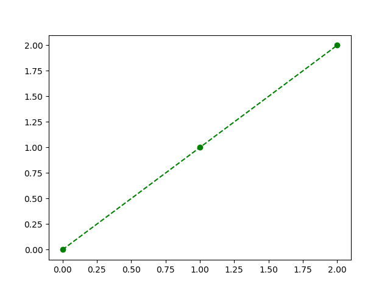
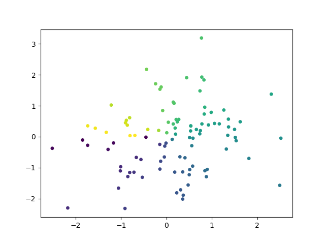
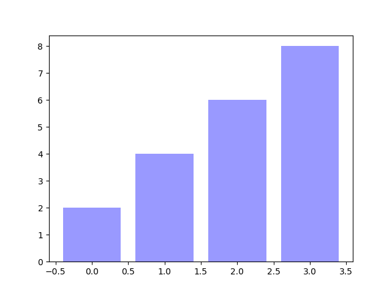

绘制线条
最基本的绘图为线条的绘制，调用plt.plot方法即可
1 | # plt.plot(x_list, y_list)， x_list为x轴取值列表， y_list为y轴取值列表，列表中的元素一一对应。 |
plt.plot也有一些额外的修饰参数，包括：c(color)**，ls(linestyle)，lw(linewidth)，marker**
color参数可选项：[https://blog.csdn.net/mmc2015/article/details/72829107](https:// blog.csdn.net/mmc2015/article/details/72829107 “color参数”)
linestyle参数可选项：
‘-‘ solid line style
‘–’ dashed line style
‘-.’ dash-dot line style
‘:’ dotted line style
linewidth：直接输入一个正数值即可
marker参数可选项：
‘.’ point marker
‘,’ pixel marker
‘o’ circle marker
‘v’ triangle_down marker
‘^’ triangle_up marker
‘<’ triangle_left marker
‘>’ triangle_right marker
‘1’ tri_down marker
‘2’ tri_up marker
‘3’ tri_left marker
‘4’ tri_right marker
‘s’ square marker
‘p’ pentagon marker
‘*’ star marker
‘h’ hexagon1 marker
‘H’ hexagon2 marker
‘+’ plus marker
‘x’ x marker
‘D’ diamond marker
‘d’ thin_diamond marker
‘|’ vline marker
‘_’ hline marker
调用时也可以组合参数，比如我们需要绿色、dashed line、o型标记，即可传参’go–’
1 | plt.plot([0, 1, 2], [0, 1, 2], 'go--') |

绘制散点图
绘制散点图的传参与绘制线图基本一致，调用plt.scatter方法即可，只不过显示出来为散点，并且多了一个s参数可以设置点的粗细
1 | n = 100 |

绘制条形图
绘制条形图调用plt.bar方法，上面两种绘图不同的是，设置颜色要用fc(facecolor)
1 | plt.bar([0, 1, 2, 3], [2, 4, 6, 8], fc='#9999ff') |
